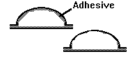
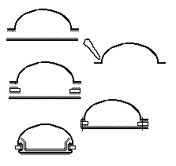

"Easy Ways Out"
Let's assume that after all this, you've decided that making Period shoes is just too
big of a pain to bother with for you. What opinions are there for you? I include this
section ONLY in the interests of exploring the entire concept, not because I think
that any of these are particularly good ideas. On the other hand, I have resorted to one
or two of them myself over the years. The following are simply meant as suggestions for
those people who are absolutely convinced that "Period Footwear" is either too
hard to make, too expensive to buy, or just too much trouble for them to bother with. If I
seem too harsh on this topic, or in someway offend with my opinions, I apologize.
What you decide to do can depend on what effect you want to achieve, and how much
effort you want to expend. The choices tend to fall into the following categories:
I am not intentionally being critical of any of these choices, or rather I am being
critical of them all in an attempt to equalize them regarding value (as everyone will have
a different opinion on their inherent worth no matter what I say about them). Both Bad
Hollywood Medieval have and Slavishly reproducing Period originals can have
their place, even if that place is not in your costuming.
It should be noted that in the categories below, some suggestions are repeated in
different places. This is because there is often more than one way to do any specific
thing.
To get an idea of what I mean by this, I offer as examples The Legendary Journeys of
Hercules, Princess Xena, Conan, the Destroyer, Red Sonya
- Go to Tandy or Museum Replicas. They have a number of fantasy clothing patterns,
including shoes and boots.
- Try finding a pair of low heeled shoes and boots.
- Take the liner stiffening out of your boots, and if at all possible, lose the heels.
- Alter your boots by placing long leg pieces by which to simulate the high boots of later
Period.
- Desert Boots/Chukkas. Although they fit a basic pattern, with soft leather uppers, and a
flat (if thick) sole. The style is vaguely reminiscent of some early Norse designs
- "Dance Slippers"
- If all else fails, go with something simple and black, and as flat as possible. If you
have to have a heel, try filing it in a bit (assuming it isn't plastic) on the sides, and
dye the heel black.
- For goodness sakes, try to avoid obvious glue marks, bad stitching, grommets, uneven dye
jobs, synthetic soles (even if dyed).
To get an idea of what I mean by this, I offer as examples The Vikings, The
Black Prince
- Go to Tandy or Museum Replicas. They have a number of fantasy clothing patterns,
including shoes and boots.
- Try finding a pair of low heeled shoes and boots.
- Alter your boots by placing long leg pieces by which to simulate the high boots of later
Period.
- "Dance Slippers"
- Desert Boots/Chukkas. Although they fit a basic pattern, with soft leather uppers, and a
flat (if thick) sole. The style is vaguely reminiscent of some early Norse designs
- If all else fails, go with something simple and black, and as flat as possible. If you
have to have a heel, try filing it in a bit (assuming it isn't plastic) on the sides, and
dye the heel black.
- For goodness sakes, try to avoid obvious glue marks, bad stitching, grommets, uneven dye
jobs, synthetic soles (even if dyed).
This is the "Medieval" of Errol Flynn's Robin Hood, El Cid, Ivanhoe,
Henry V (Olivier's), Joan of Arc, The Sword and the Rose
- Tandy Moccasin and Boot Patterns. The cut is as "wrong" as modern shoes and
boots for just about everyone but some Norse and Mongol Personas, but people are less
likely to notice.
- Try finding a pair of low heeled shoes and boots.
- Some of the Materials in this Document
- Alter your boots by placing long leg pieces by which to simulate the high boots of later
Period.
- Chinese slippers/flats or "Mary Jane" slippers are some times an acceptable
alternative, if, for no other reason than they contain no leather. They are documentable
(after a fashion) to the Low Countries in the 15th century a la Brueghel's "The
Peasant Dance". In other fashions they resemble the ankle latchet shoes described in
this document.
- "Dance Slippers"
Examples include Brother Sun, Sister Moon, Name of the Rose, Henry V
(Branagh's), Anne of a Thousand Days
- You are going to have to do research. Decide on where and when you want your design to
be from. Then research costuming materials to get a feel for the era, then start looking
at Archaeological reports and so forth for that place and time.
- Some of the Materials in this Document
- Chinese slippers/flats or "Mary Jane" slippers. After having been argued with
for longer than I care to remember, and being shown much conflicting and contradictory
evidence, I am willing to say that in general materials and design, they are better than
nothing for a limited number of persona's and time periods.
- You are going to have to do research. Decide on where and when you want your design to
be from. Then start looking at Archaeological reports and so forth for that place and
time. Looking at costuming information is less important.
- The Materials in this Document will only be useful in as much as they may give you a
place to start looking.
An elegant solution
The following technique was suggested to me by a lovely lady, as was the modification.
The system makes a style of shoe that is undocumentable to the Middle Ages (but looks really
nice). The modification makes a style of shoe that should be perfectly authentic. The
system is fairly simple.
Version 1
- Make an oversized Upper.
- Take contact or rubber cement and slather it on the inside of the upper, around the
edges. Spread it along the upper side of the upper sole leather.
- Let the cement dry.
- Carefully put the upper on the person's foot.
- Attach the heel to the sole, letting the cemented surfaces come into contact and
bonding.
- Attach the point of the shoe.
- Carefully stretching and molding the sides around the person's foot, shape the Upper TO
the foot, bonding the edges.
- Remove the foot.
- Sew up the outer seem.
- Attach a more durable sole, if desired.

Version 2
It should be possible to take this general technique, and either working with the
leather, or with cloth as a mock up, make the shoe on the person's foot inside out, and
then when sewn, turn it "rightside out"
There are two small drawbacks to this system.
- The first is that experience has suggested to me that re-inserting a last into a shoe
that was made on it, once that shoe has been turned, is nearly impossible, so you will
have to make the mock up, or cut the leather, a bit larger than you would if you were not
going to turn it (of course, this can vary greatly depending on the type of leather
you are using for your shoe). You will also have to carefully trim the seam, and possibly
place an innersole liner in the shoe.
- The second drawback is how to attach the upper to the lower while on the shoe, so that
you can do your sewing. The problem with most contact and rubber cements is that they will
tend to discolor the leather they are used on (as their oils are absorbed into the
leather). Other suggestions have been staples, tacking or basting stitches, using a nail
or a lacing fork punch enough holes to guide reassembly, and my personal favorite, shape
the upper, pin or tack in place, then, using a scratch awl, or dull knife, mark the
approximate location of the seam. Place your adhesive from that point out on the upper,
and then attach normally (if you want to place a rand in the shoe, adhere it to the soul
before messing with the upper).

Making "Period" shoes "wearable"
To be honest, I think they are already, but not everyone agrees with me. I am not
advising any of these, just mentioning that some people do these things.
- One SCA bookmaker uses a thick mixture of Barge's cement and ground-up car tires (about
like "normal" coffee grounds). This is "painted" on the bottom of the
moccasin-like boot until thick enough to make a non-skid sole over the leather one.
- Take slightly oversized "Period" shoes made around modern footwear inside.
- Make a sort of leather spat that would fit over the boot, secured by a strap under the
instep, and make it LOOK like an early period shoe. This is a way to deal with making
fighting boots
- Modern Sole: You should be able to take it to any shoemaker/cobbler in your location to
put a more firm sole, or perhaps some form of track shoe sole on your shoe.
- Butchering running shoes by removing the cloth upper and attaching a leather upper to
the tractioned sole. This is, in essence, the same as "option 2" below.
- Remaking modern shoes:
(Note there are some seriously bad problems with these suggestions, but they may still be
useful to you.)
- Option 1:
- Very carefully disassemble one of them along its seams
- Using this as a pattern, mark out a pattern on a bit of leather. For the uppers, I'd
suggest something soft, for the sole I'd suggest thickish vegetable tanned cow hide. Be
sure to place a bit of seam allowance in the uppers, especially along where the sole will
attach. A bit of seam allowance around the sole is not a bad idea as well.
- Cut a welt. This is a strip of leather that will go between the upper and the sole. Make
it at least the circumference of the sole long and at least 3/4 an inch wide (it's more
than you actually need, but better safe than sorry.)
- Stitch the upper together (Unless you are doing boots, in which case, save the legs for
last
- Turn the upper inside out, and the sole topside out. You will want to stitch the uppers
to the BOTTOM of the Sole, with the welt sandwiched between them: When you are finished,
you should have what looks like a shoe turned inside out.
- Turn the shoe right side out. If you have to (and if you made the uppers from anything
stiffer than calfskin, you may have to), soak the shoe in water before turning it.
- Option 2:
- Carefully separate the uppers from the sole.
- Cut a new sole and welt.
- Assemble as above.
Return to Contents
Footwear of the Middle Ages - "Easy Ways Out", by I. Marc Carlson.
Copyright 1996, 1997
This page is given for the free exchange of information, provided the author's name is
included in all future revisions, and no money change hands, other than as expressed in
the Copyright Page.